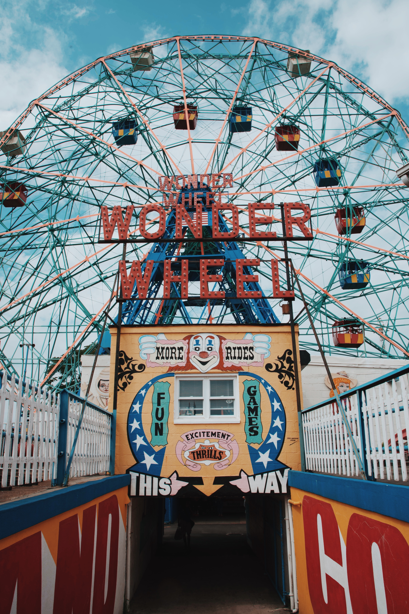

what is clown music?
Clown music is a performance based band from Melbourne, Victoria. The group’s performances are made to entice the viewer with its absurdity and avant-garde acts. The band consists of a group of highschool students coming together to entertain students and adults alike.

what we do
The group’s talent includes singing, music, dancing, scaring the viewers, and every performance includes audience participation and inclusion.
where we are from
The group is spread out all around Melbourne, although the main gathering suburb is Preston, Victoria.
aesthetics
The group aesthetic is around clowns and chaos core, which can be reflected in the performances, where the performers can be seen in clown and horror based attire and makeup.